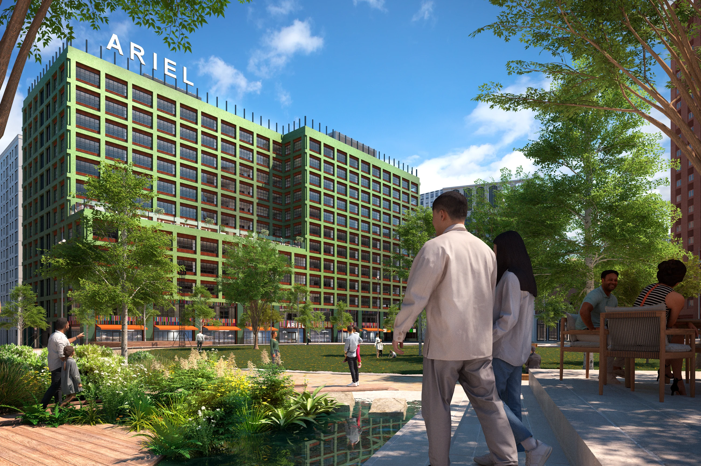

Selected work / 092025
Cityscape Digital
Creative Internship
During my internship at Cityscape Digital, I worked on architectural visualisation projects based on existing building models. I shaped each scene through camera placement, lighting and scene dressing for both still imagery and animation.

About the project
My contribution
- Selected camera angles and arranged details such as plants and cars.
- Positioned people and refined rendered images in Photoshop.
- Built and developed an architectural animation in Unreal Engine.
Focus & tools
3ds Max · Photoshop · Unreal Engine